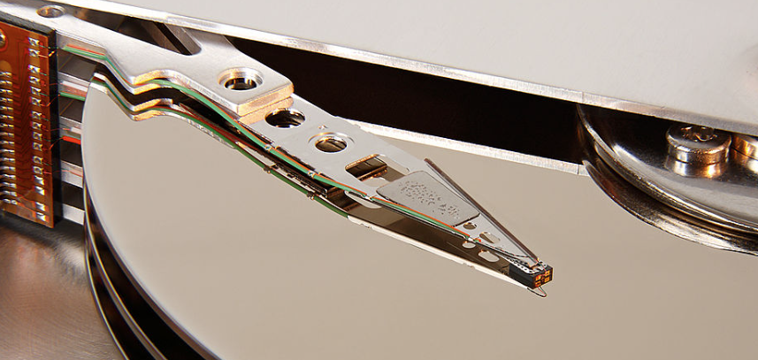

2. Magnetic Head Inspection
2. การตรวจสอบหัวอ่าน/เขียนแม่เหล็ก

Magnetic head inspection is a critical process in hard disk manufacturing. Our AI-powered systems can analyze the alignment, positioning, and quality of magnetic heads with exceptional accuracy, reducing the risk of errors during data storage and retrieval.
การตรวจสอบหัวอ่าน/เขียนแม่เหล็กเป็นกระบวนการสำคัญในการผลิตฮาร์ดดิสก์ ระบบ AI ของเราสามารถวิเคราะห์การจัดตำแหน่ง การวางแนว และคุณภาพของหัวอ่าน/เขียนแม่เหล็กด้วยความแม่นยำสูง ช่วยลดความเสี่ยงของข้อผิดพลาดในระหว่างการเก็บและเรียกคืนข้อมูล
Key Features:
คุณสมบัติหลัก:
-
Precise alignment checks for optimal head positioning
การตรวจสอบการจัดแนวที่แม่นยำสำหรับการวางตำแหน่งหัวอ่าน/เขียนที่เหมาะสมที่สุด
-
Real-time data analysis and defect detection
การวิเคราะห์ข้อมูลและตรวจจับข้อบกพร่องแบบเรียลไทม์
-
Integration with existing manufacturing systems
การผสานรวมกับระบบการผลิตที่มีอยู่
Applications:
การประยุกต์ใช้งาน:
Essential for ensuring the reliability and performance of hard disks, particularly in high-density storage solutions.
จำเป็นสำหรับการรับประกันความน่าเชื่อถือและประสิทธิภาพของฮาร์ดดิสก์ โดยเฉพาะอย่างยิ่งในโซลูชันการจัดเก็บข้อมูลความจุสูง